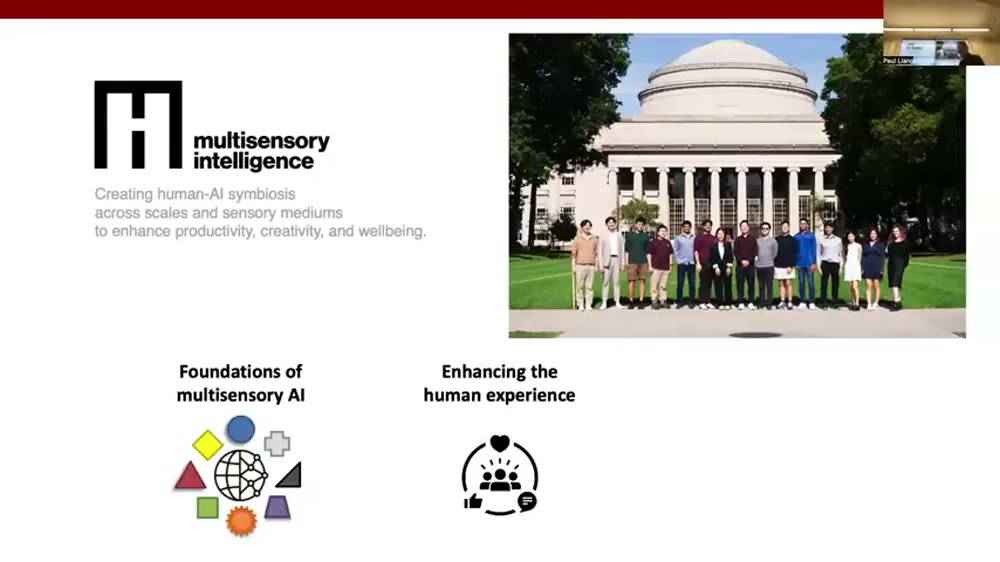
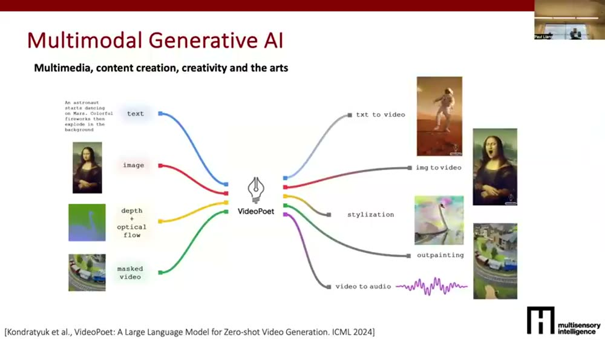
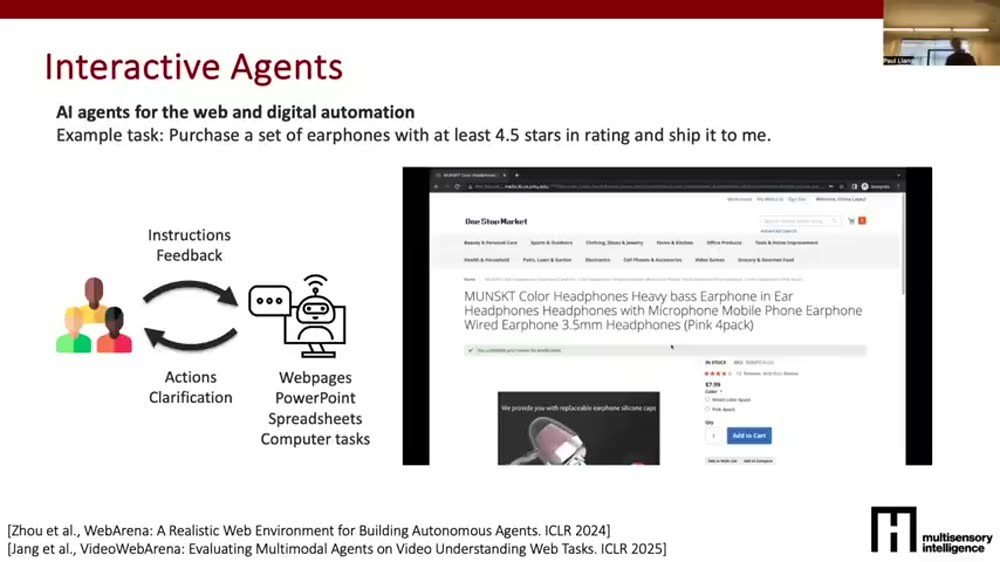
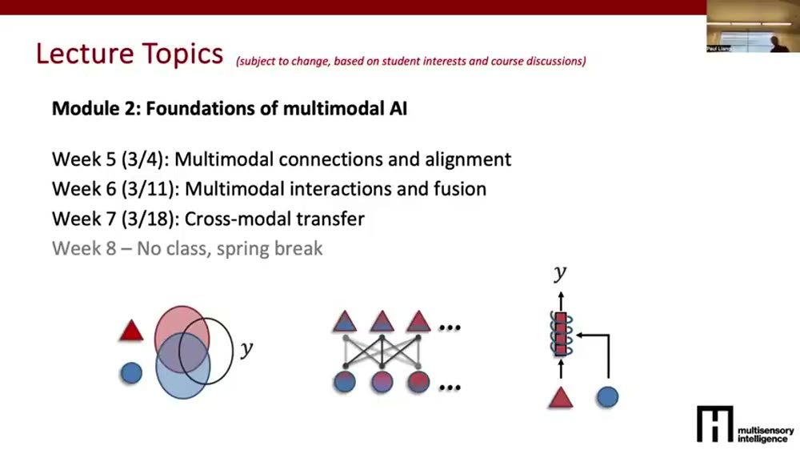
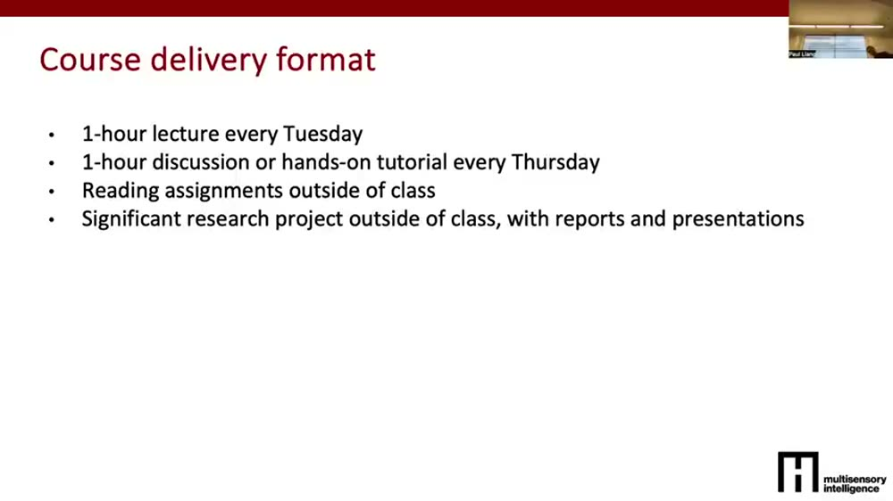
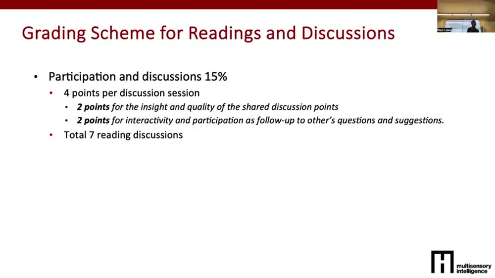
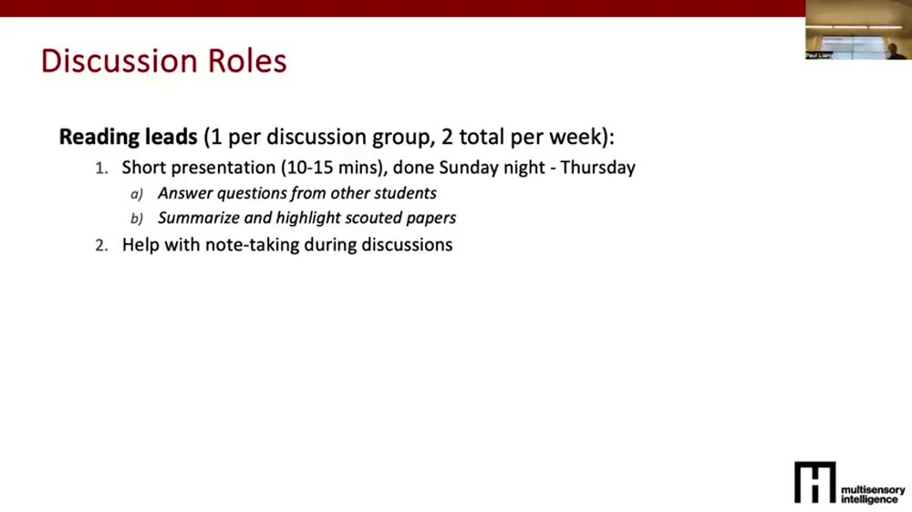
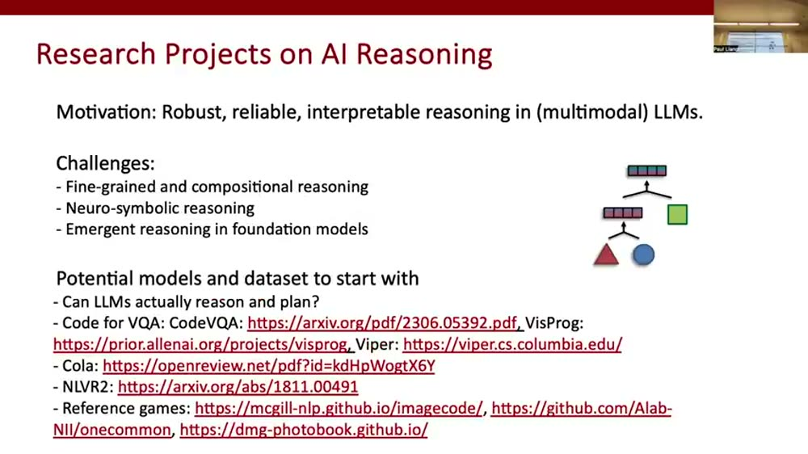
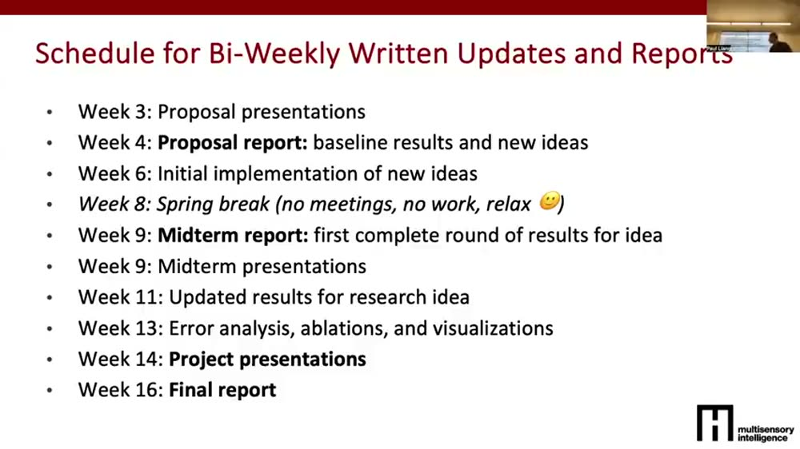

MIT《How to AI Almost Anything》
Lecture 1：课程导论
⚡一分钟速览▼
这集讲啥：讲师 Paul Liang（MIT Media Lab 新教授，主持 Multisensory Intelligence 研究组）在第一节课介绍这门全新课程：它的核心理念、四大模块、上课节奏、评分规则、研究项目流程。基本是一份"课程说明书 + 领域风景巡礼"，几乎不涉及具体技术推导。
这门课为什么不一样：传统 AI 入门课是"15 周、每周一个算法"地堆方法；这门课反过来——教"原则"不教"方法"。目标是让你能把 AI 用到那些还没被主流 AI 研究覆盖的新模态上：触觉、嗅觉、生理/可穿戴传感器、社交信号、表格数据……重点是培养"拿到一个新问题，该怎么想数据、想架构、想评估、想落地"的直觉。
课程结构（记住这几个数字）：
一句话主线：世界是多模态的，AI 也该如此 → 这门课教你把 AI 推广到任意新模态的通用原则（数据 / 架构 / 评估 / 部署）→ 通过读前沿论文 + 做一个真研究项目把这套原则练成手感。整集就是把这条线的"为什么"和"怎么落地"讲清楚。
01这门课是谁开的：Multisensory Intelligence 研究组▼
00:00开场 + 教学团队
讲师自我介绍：他叫 Paul（Paul Liang），是 MIT Media Lab 和 EECS 的新教授，主持一个叫 Multisensory Intelligence（多感官智能） 的研究组。这是这门课的第三个版本——按 Media Lab 的传统，继著名的 "How to Make Almost Anything"（如何制造几乎任何东西）和 "How to Grow Almost Anything"（如何培育几乎任何东西）之后，来了第三门 "How to AI Almost Anything"。团队里还有两位助教 Shaka 和 David，负责作业和指导课程研究项目。
00:43研究组的三个信条
这个研究组的方向，也基本就是这门课的价值取向，可以拆成三条：
- ① 多感官（multisensory）：下一代 AI 系统应该能"吃进"世界上的任何东西——从语言、视觉，到手势、各种传感器信号。课程大量篇幅在讲怎么设计能接纳几乎任意感官模态的 AI。
- ② 增强人、而不只是替代人：不是造一个复制/取代人类能力的 AI，而是造能帮人达成更好集体结果的 AI（human-AI symbiosis，人机共生）。
- ③ 安全与稳健：既然 AI 越来越能深度理解并和人互动，就必须保证它安全、稳健。课程末尾会专门讲这块。

英文逐字稿（00:00–01:48）
02AI for Anything：从机器人触觉到"闻花生"的芯片▼
01:48世界是多模态的
讲师的核心观察：我们身边的整个世界都是多模态的，而我们已经开始看到 AI 一点点学会处理越来越多的"媒介"。从处理文字的大语言模型，到能听懂语音/声音表达、读懂面部表情和肢体语言的系统，再到医疗里能从 X 光片给出合理预测、辅助医生诊断的 AI——这只是冰山一角。
02:45几个"最爱的"动机案例
- 物理感知 / 机器人触觉：机器人手臂靠力觉和触觉判断抓的是硬物还是软物、该放到哪、位置对不对；同时身上的摄像头给出形状、颜色、大小。传感器越多越稳健——你故意扰动力觉模拟地震，它能靠视觉解题；用挡板遮住摄像头模拟雨雾，它能靠力觉解题。这就是"多模态互补"的直观演示。
- AI for smell（嗅觉 AI）：研究组做了一块能感知食物饮料释放的挥发性气体的芯片。采够数据后训练 AI 去"闻"不同食物的气味。视频里那块芯片被编程成专门闻花生——拿到糖果、蛋糕或花生酱罐前就能检测出花生是否存在。对花生过敏的人非常有用。
- 生成式 AI（generative AI）：能把任意一种模态语义地翻译成另一种：文字→对应的视频；视频→匹配的音频/配乐。课程会专门讲这种"任意模态互译"的生成模型。

英文逐字稿（01:48–04:55）
03健康全景指标 + 从"预测"到"会做事"的交互式智能体▼
04:55日常可感知的健康指标
我们一年才去医院一两次，但日常其实有大量可感知的健康信号。课程会讲怎么用 AI 接住这些"全景式（holistic）健康指标"：
- 身体健康：高分辨率理解 ICU 病人状态——是坐起来了、摔倒了、还是需要医护，紧急时把信息及时传给医生护士。
- 情绪健康：身上、手机上越来越多的传感器，能感知情绪、压力、心情。
- 社交健康：不只听你说的字面词，还结合非语言表情/手势，理解你在群体里的社交互动质量。
06:04从感知到行动：交互式智能体
前面讲的几乎都是感知（perception）——给一段数据，预测点什么。但还有新一代 AI 正在冒头：交互式智能体（interactive agents），它不止做单步预测，而是连续采取多个动作来替人完成任务。
例子：你用自然语言对一个网页 agent 说"去亚马逊帮我买一副某颜色、评分至少 4.5 星的耳机"，它就会理解指令并执行一串动作——搜关键词"earphones"、按评分排序、按你过往偏好选颜色、加购物车、结账。这类 agent 还能帮你操作 PowerPoint、表格，未来会扩展到各种电脑任务。这是"会替你做事"的新一代 AI。

这一段把课程的四块版图串起来了：① 理解物理环境 → ② 处理/生成互联网上的各种数字媒介 → ③ 理解全景健康指标 → ④ 不止预测、还能替人做事的交互式智能体。后面的四大教学模块基本就是沿这条版图展开的。
英文逐字稿（04:55–07:55）
04这门课到底教什么：教"原则"，不教"方法"▼
07:55核心理念：principles over methods
这是整集最关键的一段——讲师反复强调这门课和传统 AI 课的根本区别。
传统的"机器学习导论 / AI 导论"：15 周课，每周学一个算法，一个接一个，重点全在模型本身。而这门课反过来：教原则，不教方法。所谓"原则"，是指拿到一个新问题时，能直觉地想清楚四件事：
- 数据：你需要什么样的数据？从哪里采集？
- 模型架构：需要什么样的架构？怎么设计它？
- 实验与评估：怎么快速实验、并评估模型在你数据上是否成功？
- 部署：真要落地前，有哪些现实世界的顾虑必须先解决？
目标是教会你"怎么思考什么数据有用、怎么采、各种建模架构、以及设计完初版模型后那一整套迭代评估和部署流水线"。讲师还提到学生们感兴趣的方向：手势、医疗数据、生理/可穿戴传感器、移动数据，还有一个被低估的领域——社交网络。这就是课程第一主题：AI for new modality（把 AI 用到新模态）。
英文逐字稿（07:55–09:27）
05第二主题：多模态 AI（把不同模态连起来）▼
09:27为什么要把模态连起来
课程第二个主题是多模态 AI（multimodal AI）。很多应用需要把不同数据模态连接到一起：比如把语言和手势连起来，整体理解一个人和他的社交互动；或把感知与执行（sensing and actuation）连成一个循环——感知、行动、再感知、再行动，反复多次。
这块要讲三件事：① 怎么构造数据，让你能学到模态之间的连接；② 怎么设计架构去学这些跨模态连接；③ 怎么评估和部署这些系统。这也对应后面 Module 2 的三节课：连接对齐 / 交互融合 / 跨模态迁移。
两条主题一起记：① AI for new modality——把 AI 推广到单个新模态上；② multimodal AI——把多个模态连起来协同。前者是"拓宽"，后者是"连通"。这门课的技术内核就围着这两件事转。
英文逐字稿（09:27–10:15）
06学习目标 + 先修条件（不满足也别慌）▼
10:15三个学习目标
课程是一半讲课、一半独立研究和讨论。三个学习目标：
- 研读前沿成就：通过讲课 + 个人读论文 + 批判论文，研究 AI 里那些"里程碑级"的成果，顺带练批判性阅读和批判性思维。
- 看到未来：不只理解"已有的"，还要能预判未来的挑战和愿景——AI 还可能实现什么、怎么实现。
- 动手：有很重的 hands-on 成分，去探索和实现一些新研究想法，朝那个未来推进。
11:07先修条件（都是"最好有"，不是硬门槛）
- 编程（最好是 Python；会别的语言也能很快上手，工具链大多是 Python）。
- 对现代 AI 的能力与局限有基本了解（不用懂数学细节；讲师玩笑说"每天刷 Twitter"就是个达标好办法）。
- 最好能带一些 AI 之外的领域知识进来（某个传感器、某个任务、某个你正在做的领域问题），大家合力找解法。
- 加分项：之前给某个模态试过/原型过 AI，可以借这门课往研究问题里再深挖一层。
英文逐字稿（10:15–12:26）
07上课形式 + 四大模块（12–13 节课的地图）▼
12:28每周怎么上
每周二、周四 1–2pm 各一次：周二是一小时讲课（讲师或学生、客座讲者）；周四更动手、更互动——要么是课前读好论文、来课上讨论某个争议话题，要么是上手写代码的 tutorial。阅读作业在课外布置，为周四讨论做准备。此外有一个贯穿整学期的重头研究项目，会和大家已有的兴趣领域协同。
13:38四大模块（每个约 3–4 周）
- Module 1 · AI 基础：本周先做 AI 与课程导论；周四（特例）讲怎么做 AI 研究（文献综述→读论文→想点子→快速实验验证→写论文发表）。接下来三周讲 AI for Anything 的原则——数据（什么样的数据、怎么从互联网/世界采集）、模型架构（不求面面俱到，求能给你自己的数据设计/改造架构）、学习与泛化（训练函数、怎么监控学习过程、怎么选能泛化到新数据的模型）。
- Module 2 · 多模态 AI 基础：多模态连接与对齐（为什么模态相连、怎么学）、多模态交互与融合（fusion）、跨模态迁移（cross-modal transfer，目标模态数据少时，找别的来补）。Week 8 是春假。
- Module 3 · 大模型与现代 AI：讲大模型的预训练、scaling、微调（重点在微调——不指望谁去预训练 LLM，但你常需要把它微调到自己的领域）；大型多模态模型（视觉语言、视频语言、LLM+更多模态），重点是怎么快速把大模型适配到你关心的模态（往往不是语言）；以及现代生成式 AI（生成图像、传感器数据、视频、音乐、艺术）。
- Module 4 · 交互式 AI：多步推理（数学/逻辑这类要多步才能解的难题）→ 交互式、具身、可触（embodied/tangible）AI（让系统在真实世界里有物理形态）→ 人机交互（human-AI interaction，有人在回路里，安全等顾虑很重要）。

讲师小结：整门课约 12–13 节讲课，铺在这四大模块里。
英文逐字稿（12:28–18:38）
08评分总览：40% 阅读讨论 + 60% 研究项目▼
18:45两大块成绩
- 40% · 阅读作业与讨论：会分发若干论文，你读完后带到周四课上分组讨论，分享不同观点、批判这些论文。
- 60% · 高质量研究项目：带几个检查点——proposal（含文献综述、理解问题）、midterm（实现你的想法）、final report（更多实现 + 错误分析）。
讲师特别说明，这门课和"上课形式（周二/周四）"对应得很整齐：周二吸收、周四讨论或动手，课外做项目。

英文逐字稿（18:45–19:40）
09阅读讨论怎么运作：7 次作业、读+讨论的两段式▼
19:40七次阅读作业
整学期约 7 次阅读作业（不是每周都有，错开分布）。每次约 2 篇必读 + 5–6 篇选读，外加若干讨论探针（discussion probes）——既测你对单篇论文的理解，也测你能否把论文放进某个研究领域的大背景里。
20:14课前独立完成的三件事
讨论前那一周，每个人独立做三件事（一般在讨论前的周末截止）：① 读论文；② 总结笔记；③ 自己再找几篇相关论文，并先自己尝试回答那些讨论问题。本质就是"深读、理解、用探针批判"。
20:56周四的两段式讨论
- 联合环节（约 15 分钟）：大家聚一起，由"leads"做简短展示——总结论文、回答澄清问题、汇总同学们找到的相关论文。主要是学生在讲。
- 分组讨论（约 40 分钟）：尽量每组约 10 人，圆桌式来回讨论，每人就讨论探针发表观点、其他人赞同或反对；有记录者把讨论成果写成一份连贯报告。

英文逐字稿（19:40–22:04）
10讨论角色：reading lead / synopsis lead + 七种扮演▼
22:04两个固定角色
- Reading lead（阅读组长）：每周约 1–2 名。负责周四课开头的简短展示——总结论文、回答澄清问题、汇总同学找到的相关资源；讨论时也帮着记笔记。课前干大头。
- Synopsis lead（综述组长）：讨论时先帮记笔记，更大的活儿是把整场来回讨论总结成一份连贯报告，公开发布、分享给全班。每个讨论周 1 名。课后干大头。
26:00实验性的七种"扮演角色"（TBD）
讲师很喜欢的玩法：给一篇论文分配不同"扮演视角"来激活讨论（不会每个周四都全用上）：
- Peer reviewer（同行评审）：像审稿人一样评这篇论文——优点、缺点、怎么改、有没有实验/数学错误。
- Archaeologist（考古学家）：假装在"过去"发现这篇论文——把它放进后续进展的脉络里：近期工作受它启发了？还是推翻了它？
- Academic researcher（学术研究者）：假装你是这个领域的人，读完后在它之上生成新想法、提出新研究愿景。
- Industry practitioner（业界从业者）：假装你是大公司研究主管，要说服老板"这篇论文能为公司赚大钱"。
- Hacker（黑客/快糙猛）：读完后能不能快速糙做一个 demo 复现这篇论文，从实现里学到了什么。
- Private investigator（私家侦探）：去追溯作者当初为什么做这篇——他们的背景、怎么被这个想法启发、如果重做会怎么做。
- Social impact（社会影响）：评估这篇论文对世界的正面/负面社会影响。

英文逐字稿（22:04–28:12）
11评分细则 + 一个典型阅读周长啥样▼
24:5740% 的拆分
那 40% 的阅读讨论分进一步拆：
- 15% · 个人阅读：读论文、填表单、回答问题（细则可自行查）。
- 15% · 周四参与讨论：确保人人发声——要说出独立观点，也要回应别人的分享。（前两项合计 30%。）
- 10% · 当周特殊 leads：给 reading lead（课前准备展示）和 synopsis lead（课后写报告）的额外分。
28:16典型一周的时间线
对那 7 次阅读作业，一个典型节奏是：
- 前一周三：发布阅读作业（2 必读 + 若干选读 + 讨论探针 + 分配角色）。
- 周三到周末：各自读论文。
- 周一：提交个人阅读作业（你的反思 + 答题）。
- 周一到周三：reading leads 备 slides、答澄清问题、汇总同学找到的资源。
- 周四：全班碰面，reading leads 先讲，再分组讨论，leads 记笔记，synopsis leads 课后总结成连贯报告分享全班。
讲师还提到会发一个poll，让大家选最感兴趣、想当 lead 的周次，并标出因出差/开会不能来的周。
英文逐字稿（24:57–29:23）
12研究项目（60%）：选题方向一览▼
29:39项目基调
剩下 60% 是一个高质量研究项目，类似一次独立研究（independent study）。最好组队（有理由也可单干）。可以和你正在做的硕博研究有共性，但不能完全照搬——相似的会想办法做出区别，避免一份活儿两边重复计分。最终报告要像一篇高质量 AI 研究论文，要真去探索新想法，而不是把现成的东西复现一遍。
30:30讲师列出的选题方向（都是主题，可自拟）
- 新模态：把主要服务语言/视觉/音频的 AI 适配到新模态——可能是数据挑战（采集/标注）、架构挑战、或评估框架挑战。
- 被深度学习"冷落"的领域：时间序列、生理传感器、表格数据上，传统方法（如梯度提升 gradient boosting）仍然很强，深度学习反而不灵——怎么调和？
- 味觉/艺术/音乐/嗅觉、可触与具身系统。
- AI 推理（当下大热点）：怎么让 AI 在数学/逻辑这类难题上跨多步稳健推理、构建 agentic 系统。
- 交互式智能体：从"只预测"升级到"既预测又能控制系统"——比如不只感知佩戴者状态，还采取行动去调节、最大化其福祉（既感知又行动）。
- 具身/可触 AI：给系统一个物理载体，核心研究问题是怎么让 AI 在设备上跑得快、满足现实物理约束。
- 社交智能 AI：理解人的社交互动与社交关系——有些东西不是 10 秒视频能推断的，可能需要几个月甚至几年的相处数据。
- 人机交互新媒介：AI 大多只在电脑上，能不能放到更直观、更可交互的别的媒介上？怎么让系统传达不确定性以赢得信任、主动向人求澄清以保留人的能动性？还有：超越"模仿人"的新任务——今天的 AI 大多是去模仿人类标注的 benchmark，能不能设计连人自己都做不到、从而带来真正协作的新任务？
- 伦理与安全：系统强大但有局限——不可控、可能输出不安全文本或危险图像。怎么给这些安全顾虑建一套分类法（taxonomy），并用新数据或训练目标让它们部署时更安全？

讲师说周四的课（Intro to AI research）会专门讲这些方向，并给更多"怎么想研究点子"的技巧。
英文逐字稿（29:39–34:30）
13项目节奏：双周导师会 + 16 周里程碑▼
34:41双周导师会
TA 和讲师都很投入帮大家做成项目，所以有每两周一次的必参会（约 20–30 分钟，周四课后）。每人会被分配一位主导师（讲师或某 TA）。会前要更新一份共享的 Google slide/doc，写清进展，更重要的是写清卡在哪——好让他们帮你 debug、想怎么改进系统。
35:2116 周里程碑路线图
- Week 1（本周）：起步。
- Week 2：pre-proposal——一个简短 Google 表单：名字、组员（或单干）、1–2 句话描述你想做的模态与任务。
- Week 3：各组展示 proposal——此时应已读完领域文献、给 state-of-the-art 做了分类、并列出后续想攻克的挑战。
- Week 4：proposal report（含 baseline 结果与新想法）。
- Week 6：新想法的初步实现；Week 4–6 间给你 proposal 反馈，确保想法合理。
- Week 8：春假（不开会、不干活、放松）。
- Week 9：midterm report（第一轮完整结果）+ 期中展示，从导师和同伴拿反馈。
- Week 11：更新结果，修掉期中没跑通的部分。
- Week 13：深挖方法、理解成败与局限——可视化方法怎么work、做用户研究看是否真达成目标。（也含 error analysis、ablations。）
- Week 14：项目终展。
- Week 16（最后一周）：final report 截止。

英文逐字稿（34:41–37:24）
14项目分数细则 + 出勤/wild card + 本周作业▼
37:4960% 项目怎么分
- 10% proposal · 15% midterm · 25% final report · 10% 双周更新（检查你有没有在合理推进）。
38:14出勤与 wild card
正式注册拿学分的同学都要来上课（周二、周四）；也能容纳一些旁听者，取决于注册人数（要保证讨论组能小班进行）。有长途出差请提前告知好安排。还有wild card（延期卡）：阅读作业 2 张（7 次里有 2 次可晚交一天）；项目报告每队 2 张（可把期中/期末延 1–2 天）。
39:05课程网站 + 本周任务
课程网站含所有信息，且对公众开放——讲义、视频、讨论纪要都会发到网上；Canvas 用来交阅读作业和项目报告。
本周作业（轻松）：
- 本周没有阅读作业、没有 reading。
- 开始想你想做什么项目，找志同道合的队友。
- 会发一个 Google 表单（下周二截止）填项目偏好。
- 本周四 1–2pm 同地点继续——讲怎么做 AI 研究：怎么读论文、生成点子、快速执行研究想法、写作与总结结果。
英文逐字稿（37:49–40:07）
🧠费曼重讲：用大白话把这门课讲明白▼
1. 先想个画面：MIT 的"如何 X 几乎任何东西"三连
MIT Media Lab 有一门传奇课叫 "How to Make Almost Anything"（如何制造几乎任何东西）——一学期带你学会用各种机器把脑子里的东西真造出来。后来又有了 "How to Grow Almost Anything"（生物方向，如何培育几乎任何东西）。现在第三棒来了："How to AI Almost Anything"——如何把 AI 用到几乎任何东西上。记住这个"几乎任何"，它就是这门课的野心：不挑食。
2. 这门课和你印象里的"AI 课"差在哪
你以前上的 AI/机器学习课，多半像背菜谱：第一周线性回归、第二周决策树、第三周 SVM……一周一道菜，背完 15 道。问题是，真到了厨房遇到一种没人写过菜谱的新食材（比如"气味"数据、"触觉"数据），你照样傻眼。
这门课反过来，它教你当厨师的思维方式，而不是背具体菜谱。讲师把它叫"教 principles（原则），不教 methods（方法）"。所谓原则，就是拿到任何一种新食材，你都会问自己同样四个问题：
- 食材（数据）：我需要什么样的数据？去哪儿弄？
- 锅具（模型架构）：该用什么样的模型？怎么照着我的食材改造它？
- 试味（实验/评估）：怎么快速试、怎么判断这道菜成没成？
- 上桌（部署）：真端给客人前，有哪些现实坑要先填？
啊原来如此 ①：这门课不是再教你几个新模型，而是教你"面对一种全新的、AI 还没怎么碰过的数据，该怎么从零想清楚整条链路"。学会这个，比多背几个算法值钱得多。
3. "几乎任何东西"具体指什么？——世界是多模态的
讲师反复说一句话：我们身边的世界是 multisensory（多感官）的。你不是只靠文字理解世界——你还在看（视觉）、听（声音）、摸（触觉）、闻（嗅觉），还在读别人的表情和肢体语言。可今天大火的 AI 大多只啃文字和图片。
所以这门课盯的是那些被冷落的"模态"：触觉（机器人摸出软硬）、嗅觉（一块能"闻花生"的芯片，对过敏的人救命）、生理/可穿戴信号、社交互动……它要教你把 AI 这套本事，搬到这些新感官上去。这是第一个主题"AI for new modality"。第二个主题是把这些感官连起来（multimodal）——就像人是眼耳鼻手一起用，AI 也该学会"几个感官互相补位"（摄像头被遮住就靠手感解题）。
4. 这门课怎么上：一半读论文吵架，一半自己做研究
把这门课想象成"读书会 + 创业孵化器"各占一半：
- 读书会那半（占分 40%）：每隔阵子发几篇前沿论文，你先自己读、做笔记、再找几篇相关的、自己先试着回答几个"挑刺问题"。然后周四聚在一起分组吵架——有人赞同有人反对，还有人扮"审稿人""考古学家""黑客""私家侦探"等七种角色，从不同角度把论文嚼烂。每周轮两个组长：一个课前讲解（reading lead），一个课后写总结报告（synopsis lead）。
- 孵化器那半（占分 60%）：你要做一个真·研究项目，像写一篇真论文那样，从提案、文献综述，到期中出第一批结果，再到期末深挖成败、做错误分析。导师每两周陪你过一次进度，重点是听你卡在哪、帮你 debug。16 周里钉了一串里程碑，节奏故意错开，保证人人都能跑到终点。
啊原来如此 ②：这门课的"知识"不是老师喂给你的，而是你读出来、吵出来、做出来的。讲课只占一半，另一半全靠你自己动手——所以它更像研究生研讨课，不是刷题型的本科课。
5. 一句话复述（你现在应该能讲出来）
《How to AI Almost Anything》是 MIT 一门新的研讨课，理念是"世界是多模态的，AI 也该如此"。它不教你一个个算法，而是教你一套通用原则：面对任何一种新数据（哪怕是气味、触觉、生理信号），都能想清楚"要什么数据、用什么架构、怎么评估、怎么落地"。课程分四大模块（AI 基础 → 多模态 → 大模型 → 交互式 AI），上法是一半读前沿论文+分组讨论（40 分），一半做一个学期的真研究项目（60 分）。第一节课就是把这张地图摊开给你看。
🗂核心概念卡▼
✅这集最该记住的几条▼
① 它教"原则"不教"方法"。不是再背一堆算法，而是练就"拿到任意新数据，怎么从数据→架构→评估→部署想清整条链"的思维。这是它和普通 AI 课最根本的区别。
② 核心信条：世界是多模态的，AI 也该如此。课程盯的是被冷落的新模态（触觉、嗅觉、生理、社交……）+ 把多个模态连起来协同。两个主题：AI for new modality（拓宽）＋ multimodal AI（连通）。
③ 四大模块就是一张地图：AI 基础 → 多模态 AI → 大模型与现代 AI → 交互式 AI。约 12–13 节讲课，每模块 3–4 周，春假在 Week 8 切成上下半场。
④ 这是研讨课，不是刷题课：40% 读论文+吵架，60% 做真研究。读那半要轮值当 lead、扮七种角色批判论文；做那半有提案/期中/终稿三检查点 + 双周导师会，重点汇报"卡在哪"。
⑤ 本周很轻松，但别浪费："想项目、找队友"才是真任务。无 reading、无作业；下周二交项目偏好表单；本周四继续讲"怎么做 AI 研究"。越早锁定方向和队友，后面 16 周越从容。
🔗References▼
- Paul Liang（MIT Media Lab）— How to AI Almost Anything · Lecture 1: Course Introduction（本精读的原视频，MIT Media Lab，2025 春季，时长约 40 分钟）· youtu.be/0MYt0u3CW5I
- Multisensory Intelligence — 讲师在 MIT Media Lab 主持的研究组（课程价值取向的来源：多感官、增强人类、安全稳健）· MIT Media Lab
- Kondratyuk et al. — VideoPoet: A Large Language Model for Zero-shot Video Generation, ICML 2024（frame_002 多模态生成式 AI 示例图来源）
- Zhou et al. — WebArena: A Realistic Web Environment for Building Autonomous Agents, ICLR 2024 · Jang et al. — VideoWebArena, ICLR 2025（frame_003 交互式智能体示例图引用）
逐字稿基于视频 YouTube 自动字幕清洗去重而成（自动字幕含识别误差，已做断句与可读性修整；人名/术语以正文中文笔记为准，部分专有名词如 Shaka/David 等拼写以听感为准可能有误）。关键帧截图按 frame_NNN = (NNN−1)×180 秒映射到视频时间。